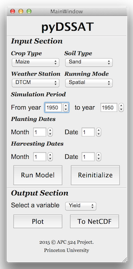

This page will show you how easy it is to take control of our pyDSSAT model. There are two options to use pyDSSAT either through terminal or GUI as shown below.
You can run DSSAT model using the following steps:
Import DSSAT_LIBRARY:
import DSSAT_LIBRARY as DL
Specify crop type, weather station information, simulation start year, simulation end year, plant month, plant date and the running mode:
DL.File(crop='Maize',soil='Sand',weather='DTCM',st_yr=1948,ed_yr=2010,plant_month=6,plant_date=10,mode='S')
Define the model and conduct the simulation:
model=DL.Model('S','run.v45','../DSCSM045.CTR')
model.run()
In case you want to do some post-process:
Load simulation output and its corresponding description file for DSSAT variables:
out=DL.postProcess('../','POST-VAR-INFO.CDE')
Draw figures for different variables, e.g., yield, precipitation and temperature:
out.drawTimeSeries('./Summary.OUT','HWAM')
out.drawTimeSeries('./Summary.OUT','PRCM')
out.drawTimeSeries('./Summary.OUT','TMAXA')
You can also use our designed python GUI for pyDSSAT. To do this, you need to:
cd PyScripts
python ./DSSAT_GUI.py
Then you will be able to see the GUI like this:
